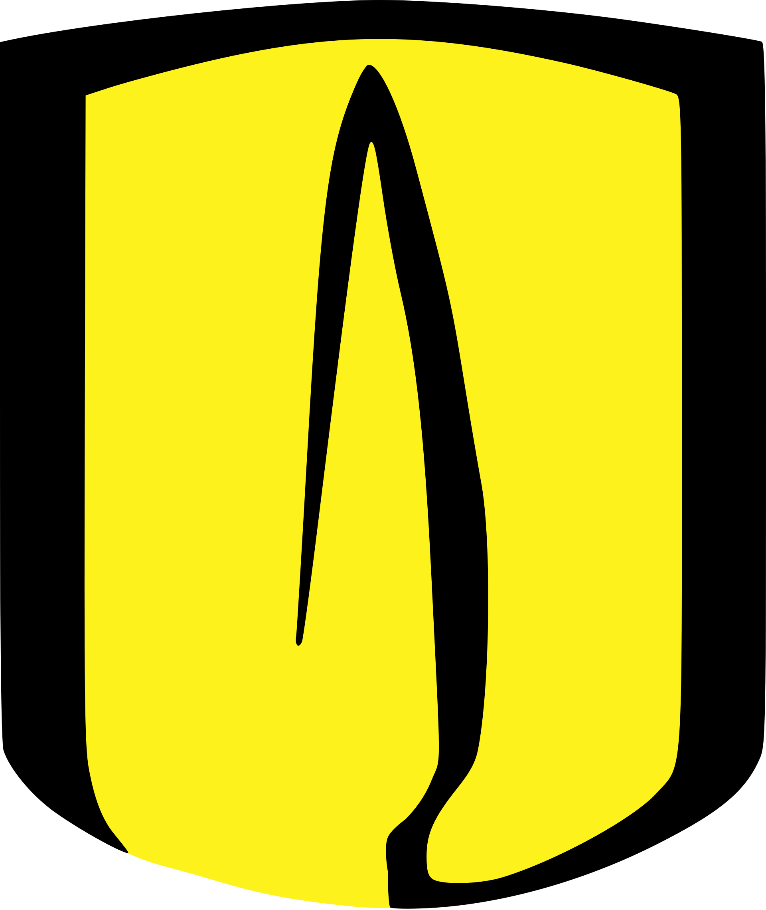

Módulo 3.2
Narrativas visuales con IA
Ver, crear y contar historias con imágenes — de analizar a comunicar.
La semana pasada: texto → imagen

Lo que aprendimos
Exploramos cómo los modelos de difusión generan imágenes a partir de texto. Aprendimos sobre prompt engineering visual: emociones, estilos, fotografía, ilustración, historia del arte.
El giro de hoy
Hoy damos un giro fundamental: la IA también puede VER e INTERPRETAR imágenes. El camino inverso nos abre posibilidades completamente nuevas para el trabajo profesional.
Antes
Texto → Imagen
Hoy
Imagen → Texto
La IA
que ve
El cambio de dirección
Los mismos modelos que generan imágenes también pueden analizarlas. Estos modelos se llaman «multimodales» porque trabajan con múltiples tipos de información.
Paso 1
Generación
Texto → Imagen
El modelo crea una imagen a partir de tu descripción textual.
Paso 2
Comprensión
Imagen → Texto
El modelo lee, describe y razona sobre lo que ve en una imagen.
Paso 3
Multimodal
Texto + Imágenes + Documentos + Gráficas
El modelo combina varios tipos de entrada para razonar y responder.
Principales modelos multimodales disponibles hoy
¿Cómo «ve» una IA?
Los modelos multimodales no ven como nosotros. Su proceso es matemático e interesante.
Tokens visuales
La imagen se descompone en parches (patches)Codificación
Cada parche se convierte en un vector numéricoProyección CLIP
Se alinea con el espacio de texto del LMRazonamiento LM
El modelo responde en lenguaje natural¿Qué puede hacer la IA con una imagen?
Seis capacidades fundamentales que transforman el trabajo con documentos e imágenes:
Describir
Generar una descripción detallada de lo que aparece en una fotografía.
Extraer texto (OCR)
Leer documentos escaneados, recibos, actas manuscritas con OCR inteligente.
Interpretar gráficas
Analizar gráficos de barras o líneas y explicar tendencias automáticamente.
Comparar
Identificar diferencias entre dos imágenes: antes y después de una intervención.
Clasificar
Determinar el tipo de documento y categorizar contenido visual automáticamente.
Responder preguntas
Contestar preguntas específicas sobre lo que aparece en la imagen.
Demostraciones en vivo: análisis de imágenes
Tres ejercicios prácticos para explorar las capacidades de análisis visual de la IA en contextos reales.
Descripción de una fotografía
Prompt de ejemplo:
Describe esta imagen en detalle. Incluye: qué aparece en la foto, el contexto probable, las condiciones de iluminación, y cualquier detalle relevante que puedas identificar.
La clave es mostrar la riqueza del análisis que la IA puede producir.
Análisis de documento escaneado
Prompt de ejemplo:
Extrae todo el texto que puedas leer, organízalo en un formato estructurado, e identifica los datos clave: fechas, montos, nombres, entidades.
Aplicación directa: digitalización de actas, extracción de formularios, lectura de tablas en PDFs escaneados.
Interpretación de una gráfica
Prompt de ejemplo:
Identifica: qué muestra la gráfica, las tendencias principales, datos atípicos o anomalías, y conclusiones preliminares.
La IA puede ser un primer filtro analítico que ahorra tiempo, pero el juicio profesional de la persona sigue siendo indispensable.
Prompts para visión: cómo preguntarle a la IA sobre una imagen
La anatomía de un buen prompt de análisis visual tiene cuatro componentes esenciales:
Contexto
Dile a la IA quién eres y por qué analizas la imagen.
Eres un analista revisando evidencia fotográfica de un proyecto de infraestructura.
Instrucción específica
No digas «describe la imagen», di exactamente qué necesitas.
Identifica el estado de avance de la obra y compáralo con lo esperado.
Formato de salida
Pide la respuesta como la necesitas.
Presenta tus hallazgos en una tabla con columnas: elemento observado, estado, observaciones.
Capas de análisis
Pide primero lo general, luego los detalles.
Primero describe el panorama general. Luego analiza cada elemento individualmente.
Limitaciones: lo que la IA NO puede hacer bien

Alucinaciones visuales
La IA puede describir detalles que no existen. A veces «inventa» texto en letreros o números en documentos.
Contexto local
Puede malinterpretar elementos culturales o regionales específicos.
Reconocimiento de personas
No es confiable para identificar individuos específicos.
Precisión numérica
Puede cometer errores al leer cifras en documentos complejos.
Narrativa
visual
¿Qué es una narrativa visual?
Una narrativa visual es una secuencia de imágenes que cuenta una historia con intención comunicativa. No es decoración, es argumento.
Reportajes fotográficos
Imágenes ordenadas deliberadamente para contar una historia.
Informes «antes y después»
Argumentan visualmente un cambio (o su ausencia) en una intervención.
Presentaciones con infografías
Guían al lector a través de un razonamiento paso a paso.
Campañas de comunicación
Usan imágenes estratégicamente para transmitir un mensaje a la audiencia.
Puntos de partida de una narrativa visual
Una narrativa visual puede comenzar desde lugares muy diferentes, pero el proceso de construcción es universal.
Desde una idea o mensaje
«Quiero explicar por qué este proyecto importa para la comunidad.»
«Necesito que mi audiencia entienda el proceso de evaluación.»
Desde un hallazgo o dato
«La ejecución del proyecto fue del 23% cuando debía ser del 80%.»
«Encontramos una diferencia significativa entre lo contratado y lo entregado.»
Desde una evidencia visual
«Tengo esta fotografía de la visita de campo y necesito que hable por sí misma.»
«Este documento escaneado contiene información que debo presentar con claridad.»
Desde un proceso o flujo
«Quiero mostrar las etapas del proceso de revisión para capacitación interna.»
«Necesito ilustrar el ciclo de un proyecto de principio a fin.»
El punto de partida cambia. El método para construir la narrativa es el mismo.
La estructura de una narrativa visual efectiva
Toda narrativa visual efectiva se puede organizar en tres momentos clave que guían al lector a través de la historia.
1. Establecer
¿Cuál es el punto de partida? ¿Qué necesita saber el lector antes de todo lo demás?
- El contexto o el plan original
- La situación esperada
- La pregunta inicial
2. Desarrollar
¿Cuál es el corazón de la historia? ¿Qué ocurrió, qué se descubrió, qué cambió?
- El hallazgo o el contraste
- El dato revelador
- El problema central
3. Resolver
¿Hacia dónde vamos? ¿Qué se concluye, qué se propone, qué se pide?
- La recomendación o la solución
- El llamado a la acción
- La proyección futura
Esta estructura se adapta a casi cualquier situación:
Informe de análisis
Lo planeado → Lo encontrado → Lo recomendado
Campaña de comunicación
El problema → El impacto → La solución
Capacitación
El concepto → La demostración → La práctica
Cómo estructurar con IA: De la idea a la narrativa
Antes de generar cualquier imagen, el primer paso es definir y estructurar claramente el mensaje que queremos comunicar. La Inteligencia Artificial es una herramienta poderosa para transformar una idea inicial o un hallazgo en una narrativa visual coherente de tres momentos.
Define tu mensaje
Comienza con una idea, un hallazgo o un dato clave que quieras comunicar.
Pide ayuda a la IA
Usa un prompt para que la IA lo convierta en una estructura de 3 momentos (Establecer, Desarrollar, Resolver).
Crea la narrativa
Obtén títulos, descripciones de imágenes y tonos emocionales para cada momento.
Cómo estructurar con IA: prompts de ejemplo
El punto de partida puede ser cualquier cosa, pero la estructura de tres momentos organiza cualquier mensaje de manera efectiva:
Cómo crear prompts para imágenes con IA
Con los tres momentos de tu narrativa visual definidos —Establecer, Desarrollar, Resolver—, cada uno se transforma en un prompt específico para generar una imagen. El secreto para una narrativa visual coherente reside en asegurar que las tres imágenes compartan un «universo visual» consistente.
Para lograr esta coherencia visual, recomendamos definir un estilo base y una paleta de colores que se repita en todos los prompts. Esto garantiza que, aunque las imágenes representen momentos diferentes, visualmente se sientan parte de la misma historia.
Este estilo base es flexible y puede adaptarse según las necesidades de tu mensaje, desde una infografía corporativa hasta una ilustración periodística.
El idioma de los prompts: por qué el inglés es clave
Los modelos de generación de imágenes más potentes (DALL·E, Midjourney, Stable Diffusion, Gemini) fueron entrenados principalmente con datos en inglés. Esto significa que, aunque un prompt en español pueda funcionar, uno en inglés tiende a producir resultados significativamente más precisos y controlables.
La buena noticia es que no necesitas ser un experto en inglés. Puedes apoyarte en la misma Inteligencia Artificial para traducir y enriquecer tus descripciones, añadiendo los detalles técnicos de composición y estilo necesarios para cada momento de tu narrativa.
Este enfoque nos permite mantener la claridad de nuestras ideas en español y optimizar la generación de imágenes con prompts de alta calidad en inglés. Es el método que aplicaremos en la práctica durante el taller.
Aplicando la estructura de 3 momentos: ejemplo práctico
Cada momento se convierte en un prompt específico para generar imágenes coherentes. El estilo base es el hilo visual que une los tres.
Inversión pública en espacios recreativos
Prompt para la imagen de apertura — el contexto, el plan original:
Professional flat design illustration of a vibrant public park project blueprint, showing planned playground equipment, fountain, green areas, institutional blue and gold palette, clean modern style, architectural rendering feel
40 años después: deterioro visible
Prompt para el contraste central — el hallazgo, el dato revelador:
Professional flat design illustration showing contrast between planned and actual state of a public park, split composition, left side colorful and maintained, right side faded and deteriorated, same institutional blue and gold palette, clean modern style
Recomendación: plan de recuperación integral
Prompt para el cierre — la solución, el llamado a la acción:
Professional flat design illustration of a park renovation plan, showing community engagement, new equipment installation, timeline with checkpoints, optimistic but professional tone, institutional blue and gold palette, clean modern style
Tres imágenes. Un argumento. Una historia clara.
Puntos de partida para tu narrativa visual
La herramienta de IA es versátil, y aunque hoy usaremos una imagen como inicio, las narrativas visuales pueden nacer de diversas fuentes según tu necesidad:
Desde un Documento
«Tengo un informe de 50 páginas. Necesito una presentación visual de los hallazgos principales.»
Sube el documento a la IA y pide que identifique los 3 momentos narrativos clave para la síntesis.
Desde Datos
«Tengo una tabla de ejecución con cifras alarmantes.»
Pide a la IA que convierta los datos en una narrativa visual: contexto, hallazgo y recomendación.
Desde una Directriz
«Mi jefe me pidió una pieza sobre los resultados del año para comunicar a las partes interesadas.»
Pide a la IA que proponga una narrativa de tres momentos para una audiencia no técnica.
Desde una Imagen
«Tomé esta foto en la visita de campo y necesito que cuente la historia del hallazgo.»
Este es el ejercicio que haremos hoy en el taller: analizar una imagen para construir una historia.
La herramienta de IA es la misma, el punto de partida es adaptable.